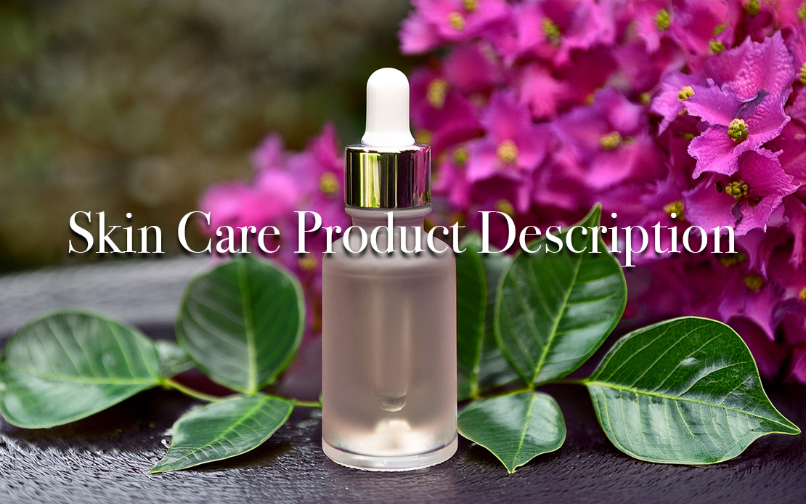

Project Overview
This synthetic project simulates the copywriting requirements for launching a flagship product – a "Cellular Renewal Peptide Serum" – for a rapidly growing biotech skincare brand. The core objective was to translate complex scientific concepts (peptide technology, cellular signaling) into compelling, benefit-driven narratives that resonate with discerning beauty consumers, address their specific skin concerns (pain points), and align with a premium, efficacy-focused brand identity across multiple digital touchpoints.
The Challenge
The primary challenge was to move beyond simple feature listing and ingredient callouts. It required crafting persuasive copy that not only explains *what* the serum does but *how* it interacts with the skin on a deeper level, telling a cohesive story about skin health and renewal. This involved simplifying complex science without losing credibility, addressing consumer pain points (like loss of firmness, dullness) empathetically, and maintaining a sophisticated brand voice consistent with a premium, science-backed positioning. Adherence to simulated advertising guidelines (like TGA principles) was also a background consideration.
My Approach & Process
- Science Immersion: Deeply familiarized myself with the core peptide technology, its mechanism of action (e.g., stimulating collagen synthesis, improving cellular communication), and clinical efficacy data points.
- Target Audience Insight: Focused on the "modern beauty consumer" identified in the brief – likely informed, seeking tangible results, concerned with visible signs of aging, and appreciative of both science and sensorial experience. Identified key pain points: visible lines, loss of elasticity, uneven texture, desire for proactive skin health.
- Narrative Development: Crafted a core story around "empowering the skin's own renewal processes," positioning the serum as an intelligent partner supporting natural cellular function.
- Ingredient Storytelling: Focused on explaining the role of the key peptides, illustrating how they "signal" skin cells to behave more youthfully, rather than just naming them.
- Multi-Channel Adaptation: Developed distinct copy angles tailored for different platforms:
- Website/Landing Page: Detailed, informative, blending story with scientific credibility and clear benefits.
- Email Marketing: More personal, focused on pain points, building desire, and driving clicks.
- Social Media/Ads: Concise, attention-grabbing, benefit-led, visually driven copy.
- Brand Voice Consistency: Maintained a tone that was knowledgeable, sophisticated, empowering, and trustworthy across all pieces.
- Optimization Considerations: Integrated relevant keywords (e.g., "peptide serum," "skin firmness," "cellular renewal") naturally for SEO and focused on clear calls-to-action for conversion.
Sample Content
Excerpts demonstrating the tailored copy across different channels:
1. Website Product Description Excerpt:
Awaken Your Skin's Potential: Cellular Renewal Peptide Serum
Go beyond surface-level fixes and empower your skin's innate intelligence. Our groundbreaking Cellular Renewal Peptide Serum harnesses the power of advanced biotech peptides to fundamentally improve skin health from within. This concentrated elixir works in harmony with your skin's natural processes, encouraging a visibly firmer, smoother, and more luminous complexion.
At its heart lies our proprietary Cellular Renewal Peptide Serum™, a blend of bio-engineered signal peptides. These intelligent molecules mimic the skin's own communication pathways, effectively 'reminding' cells to optimize collagen production and reinforce the skin's vital support structure. Witness a remarkable improvement in elasticity and a reduction in the appearance of fine lines as your skin rediscovers its youthful resilience.
Lightweight, fast-absorbing, and formulated for optimal bioavailability. Experience the fusion of potent science and luxurious texture.
Key Benefits:
- Visibly improves firmness and elasticity by supporting collagen synthesis.
- Smooths the appearance of fine lines and wrinkles.
- Enhances cellular communication for healthier skin function.
- Boosts radiance and evens skin texture.
- Provides deep, lasting hydration with Hyaluronic Acid.
How to Use: Apply 2-3 pumps to clean face and neck, morning and evening, before moisturizer.
2. Email Campaign Excerpt (Pain Point Focus):
Subject: Feeling like your skin isn't bouncing back like it used to?
You look in the mirror, and maybe you notice... things feel a little less firm? Those fine lines seem more defined? Your skin just doesn't have that 'snap' anymore?
It's a common story, but it doesn't have to be yours. Skin aging is complex, involving a slowdown in crucial cellular processes. But what if you could gently encourage your skin to remember its youthful vitality?
Introducing our Cellular Renewal Peptide Serum – a revolutionary approach born from biotech research. We didn't just create another anti-aging cream; we formulated an intelligent serum designed to work with your skin, supporting its natural ability to rebuild and renew.
Imagine smoother texture, renewed firmness, a radiance you thought was fading... It's possible.
Ready to re-ignite your skin's potential?
3. Social Media Ad Copy Example (Instagram/Facebook):
Tired of skin that feels less firm? 🤔 Support your skin from within! ✨
Our NEW Cellular Renewal Peptide Serum uses advanced biotech peptides to 'talk' to your skin cells, encouraging natural collagen production for visibly firmer, smoother results. 🧬
Science-backed efficacy meets luxurious skincare. Tap to unlock your skin's potential!
#PeptidePower #BiotechSkincare #[BrandName] #AntiAging #SkinFirmness #CellularRenewal #SkincareScience
[Shop Now]
Key Skills Demonstrated
- Advanced Skincare Copywriting
- Brand Storytelling & Narrative Development
- Science Communication (Translating complex concepts)
- Ingredient Integration & Mechanism Explanation (Cellular level)
- Addressing Customer Pain Points
- Premium/Luxury Brand Voice Consistency
- Multi-Channel Copy Adaptation (Web, Email, Social, Ads)
- Benefit-Driven & Persuasive Writing
- Understanding of E-commerce & Digital Marketing Context
- Conceptual SEO & Conversion Optimization
- Audience Analysis
- Adherence to Advertising Guidelines